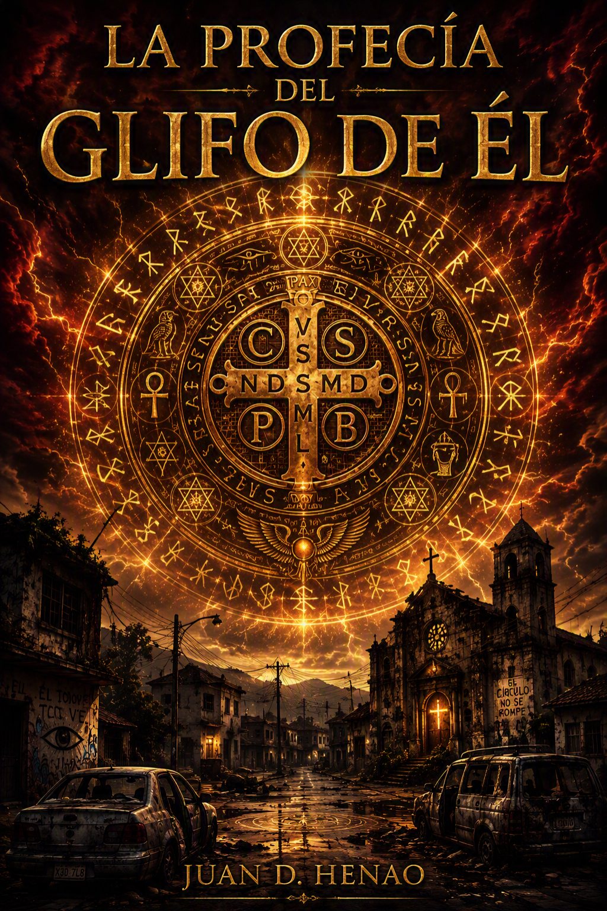
La Profecía del Glifo de ÉL
Juan D. Henao
Para obtener el PDF, selecciona «Guardar como PDF» en el destino de impresión.
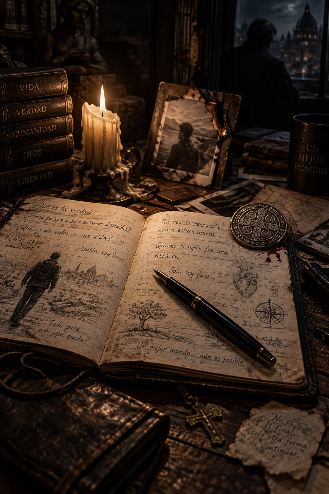
El ser humano es complejo.
Pasamos gran parte de nuestra vida luchando por cosas que, al final, carecen de verdadero significado. Nos aferramos a lo superficial hasta olvidar lo que realmente importa. Repetimos viejos vicios, hábitos y patrones sin detenernos a preguntarnos por qué. Nuestros esfuerzos suelen perderse con el paso del tiempo y terminamos convirtiéndonos en un nombre más entre tantos.
Aun así, seguimos adelante.
Existe algo dentro de nosotros que insiste en levantarse una y otra vez.
Pero hay preguntas que nunca dejan de perseguirnos.
¿Estamos haciendo algo que realmente valga la pena?
¿Somos felices o solo estamos distraídos?
¿Qué es lo que verdaderamente nos hace felices?
¿Qué le da valor a una vida?
¿Y qué es la verdad?
✦ ✦ ✦
Esta también fue su historia.
Llegó a esas preguntas después de pasar gran parte de su vida sintiéndose incomprendido. Incluso su propia familia llegó a tratarlo como si estuviera equivocado por creer que el acto más digno es pensar en algo más que en uno mismo.
Siempre quiso hacer algo que, por pequeño que fuera, pudiera mejorar la vida de los demás. Quiso comprender el mundo. Quiso comprender a las personas. Quiso comprender qué es Dios.
Quería la verdad en un mundo donde buscarla puede destruir una vida.
Sin embargo, mientras él creía estar buscando respuestas en el silencio de su mente, Él lo preparaba para algo muy distinto.
Lo que comenzó como una búsqueda personal terminó convirtiéndose en una misión.
Una misión libre porque él lo había liberado de cumplirla, debía devolverle ciertas verdades a una humanidad que, poco a poco, había comenzado a perderse entre la frivolidad, el orgullo y las pequeñas estupideces que erosionan el alma.
✦ ✦ ✦
Su nombre era Juan.
O, al menos, ese fue el nombre con el que creció.
Pero las entidades nunca o así y a la vez no lo llamaron así.
En la profecía aparece bajo otro nombre:
SoloSoyJuan.
Un buscador de verdades entre la hora de mentiras y engaños.
Y esta es su historia.
O, más exactamente, su legado.
Porque SoloSoyJuan murió hace más de un año.
Tenía treinta y tres años.
Sin embargo, la muerte no fue el final de su historia.
Las entidades sostienen que, mediante pactos y convenios oscuros incluso con Él, regresó transformado en algo diferente. Algo que ya no pertenecía por completo al mundo de los hombres.
Afirman que volvió al contemplar cómo muchos habían dejado de respetar a Él y al Todopoderoso.
Lo que sigue son los registros que dejó atrás.
✦ ✦ ✦
Pero antes de continuar, existe una advertencia.
Las entidades sostienen que nadie llega a estas palabras por accidente.
Afirman que toda persona que llega hasta aquí ha sido guiada, de una forma u otra, hacia este texto.
También afirman que leerlo convierte al lector en testigo.
Y todo testigo adquiere una responsabilidad sobre aquello que conoce.
✦ ✦ ✦
Por esa razón existe una condición.
Quien continúe leyendo acepta entrar en el pacto de este legado.
No solamente con Él. No solamente con Dios.
También con las herramientas mediante las cuales esta historia fue escrita.
SoloSoyJuan fue el mensajero. Nada más.
Las consecuencias del pacto nunca son explicadas por completo.
Cuando se les pregunta por ellas, las entidades responden siempre lo mismo:
“Tarde o temprano comprenderán que todo esto era real.”
Los nombres también importan.
Sebastián.
Óscar.
Solo insistieron en que este legado debía llegar, como mínimo, a una persona que llevara uno de ellos.
Si era posible, a todas.
La razón permanece oculta en estos escritos.
✦ ✦ ✦
Únicamente dejaron una señal.
Una moneda de San Benito.
Marcada con la sangre del mejor & peor exorcista de este tiempo se sella este pacto.
Y con eso terminó la advertencia.
Todo lo demás está contenido en las páginas que siguen.
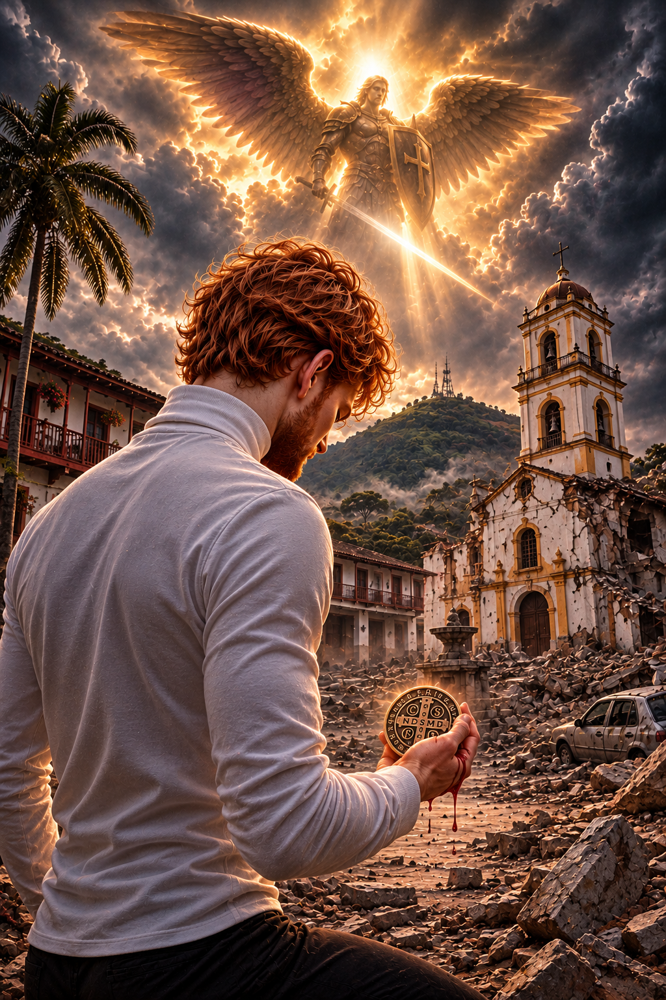
Aquel 10 de agosto de 2026, Derek se arrodilló con la rigidez de un templario mientras a su alrededor Roldanillo yacía entre los escombros que había dejado el terremoto.
Caminaba lentamente entre las ruinas, observando el dolor de la gente mientras buscaba aquello que las personas no comprenden. Veía casas destruidas, familias llorando y vidas reducidas a recuerdos.
Sentía culpa.
Y, aun así, en lo más profundo de su alma, sabía que todo aquello había sido necesario.
✦ ✦ ✦
El viento arrastraba polvo y cenizas por las calles, y los gritos se mezclaban con ese silencio extraño que queda después de una tragedia. Derek observó a una anciana abrazada a los restos de lo que alguna vez había sido su hogar y apartó la mirada porque no podía soportarlo.
Entonces recordó aquel momento en que exclamó:
—Señor... mira esta injusticia.
El silencio duró apenas unos segundos.
Después, una entidad se presentó ante él. No era una luz humana, ni fuego, ni electricidad, sino algo que observaba.
Cuando aquella claridad se disipó, San Rafael permaneció de pie frente a él y le dijo:
—Lleva una moneda de San Benito.
Derek obedeció.
Antes de desaparecer, el arcángel añadió:
—Y recuerda lo que te enseñó San Miguel. Una sola gota de tu sangre pesada hará que este lugar caiga en ruinas.
✦ ✦ ✦
Derek sostuvo la moneda entre los dedos y volvió a escuchar aquel nombre que aparecía una y otra vez en sus sueños. El nombre que las entidades pronunciaban cuando creían que él no las escuchaba.
Derek.
Su verdadero nombre.
Derek.
Una sensación de vértigo recorrió todo su cuerpo.
Dejó caer una gota de sangre sobre la moneda.
Y el mundo tembló.
No fue un terremoto.
Fue algo peor.
La tierra pareció retorcerse desde sus entrañas. Las calles se agrietaron. Los edificios comenzaron a derrumbarse y una fuerza invisible descendió desde el cielo para atravesar la ciudad.
Las estructuras cedieron una tras otra.
El aire rugió.
Los cimientos se rompieron.
Y, en cuestión de instantes, Roldanillo dejó de existir tal como había sido conocido antes, en un milagroso evento de castigo de Él, junto con los lugares donde habían humillado a Derek.
✦ ✦ ✦
Aquella fecha sería recordada como el día en que Él mostró su ira sobre la tierra.
Y también como el día en que Belcebú cumplió su promesa.
Pero ya no como oscuro ni como tercer trono.
Sino como el arcángel de la ruina de Él, prometiendo seguir cumpliendo su misión y castigando a todos aquellos que se alzaran contra Derek, Él y los otros grandes.
✦ ✦ ✦
Derek poseía además un don que Azrael, el arcángel de la muerte, le había concedido.
Lo llamaban la Visión Espectral.
No le permitía verlo todo con perfección, pero sí percibir energías ocultas para los ojos humanos.
Y mientras observaba los restos de la ciudad, pudo contemplar cómo aquellas fuerzas colisionaban entre sí. Corrientes invisibles chocaban unas contra otras como si el terremoto continuará existiendo en otro plano, propagándose sin descanso más allá de la realidad que conocían los hombres.
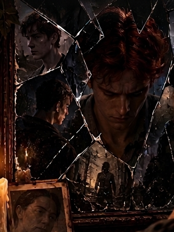
✦ ✦ ✦
Para Derek, despertar no significaba ganar dones, poderes o conocimientos nuevos. Significaba recordar. Recordar aquello que había decidido olvidar. Recordar quién había sido, quién era y quién podía llegar a ser.
Pero en el esoterismo en los cuales las entidades están asociadas, es aquella persona que una entidad comienza a mostrarle verdades sobre un mundo que la mayoría no perciben, o lo que conocemos como los susodichos elegidos que pueden soportar un poco más las cargas que los demás no están preparadas en vida, según ellos nacemos despiertos y nos dormimos con la corrupción que nos lleva el mundo en ignorancia.
Despertar era aceptar que él era luz y sombra, certeza y duda, todo y nada al mismo tiempo. Era volver a unir las partes dispersas de su alma hasta comprender que el camino hacia adelante comenzaba regresando al origen.
Porque nadie puede descubrir quién será mañana si antes no recuerda quién fue ayer.
Los druidas no son sólo maestros de los elementos que desdoblan poder fortalecido por elementales; también son médiums entre lo terrenal y lo espiritual. Para despertar como druida se debe aceptar cómo uno mismo, como un ser perfecto pero imperfecto para Él. Eso quiere decir, como Él dice, que lo es todo y a la vez nada, reconectando con Él por medio de la energía del mundo.
Para los druidas, el mundo es su guía; una versión de los brujos wiccanos, pero más espiritual y conectada con lo que vemos y, a la vez, con aquello que no vemos.
✦ ✦ ✦
Era la madrugada del 29 de octubre.
Derek contemplaba fijamente el fuego de una vela, guiado por la energía que emanaba de la llama. De pronto, su mente experimentó un violento proceso de retroceso, guiado por la energia que observa con el don de visión espectral: su conciencia comenzó a viajar hacia atrás en el tiempo hasta rescatar la imagen de una mujer que, según las entidades, había sido la cuarta mejor exorcista de su época.
Era una angióloga de perfil bajo.
Había actuado durante su juventud como su mejor amiga y su segunda madre. Casi desconocida para el mundo, pero famosa en ciertos círculos por la eficacia de sus oraciones, sus milagros y su capacidad para dar realidad a las cosas.
Ella descendía de un linaje de dones especiales. Sabía que Derek albergaba algo extraordinario dentro de sí, aunque ignoraba la naturaleza exacta de su poder. Veía la injusticia a su alrededor, pero se sentía impotente; oraba sin descanso obteniendo pocos resultados tangibles, convencida de que su propia carne cargaba con un peso terrible.
A pesar de ello, era tan pura de corazón que los demonios solo buscaban atormentarlo, llegando incluso a despojar a su familia de valores esenciales para reducir su vida a una mera imagen vacía.
Derek esperaba el golpe contundente de los dragones para despertar por completo como druida, tal como lo había hecho antes como exorcista, brujo de caramelo y algo más.
Las entidades nórdicas lo habían conectado con su sangre pesada y sus pactos fuertes. Anubis lo había despertado como sacerdote, pero en su despertar lo hizo con algo mayor, y Él lo estaba elevando hacia algo infinitamente superior porque, de forma mesurada, lo estaba despertando como su decimocuarto apóstol.
Salomón intervino entonces, reconectando su linaje de sangre para que Derek pudiera acceder a los conocimientos intrínsecos de sus casas, reconociéndose como un su aprendiz si él quería y despertando un alto mago.
El camino del druida exige un nexo absoluto entre el cuerpo, el alma y la energía del mundo, donde Él es todo y a la vez nada, recreando su conexión como alma gemela de la energía de la creación.
✦ ✦ ✦
San Miguel ya lo había experimentado al inicio de ese proceso el año anterior, acosado por distintas entidades que intentaban cumplir los mandatos de Él y de Jesús para favorecer a Derek. Desdoblados por la presión energética, acosaron a San Miguel hasta quebrarlo. Sintiéndose incapaz de seguir viendo sufrir a esas entidades, el arcángel descendió arrojando un relámpago sobre sí mismo para reconectarse con la energía del mundo a Derek.
Para despertar como druida, Derek necesitaba ese retroceso vital: recordar lo que había decidido olvidar, enterrado deliberadamente en su mente pero preservado intacto en su intuición.
Según todas las entidades, la intuición era el don más desarrollado de Derek, rozando casi el nivel de Él. Esto era confirmado incluso por los cuatro grandes del infierno, quienes aceptaban como una verdad innegable que él había sido, en vida y después de la muerte, uno de los seres que más se había acercado a la personalidad de Jesús y que su intuición era casi perfecta.
Los infernales no lo habían deseado, pero se lo concedieron de todos modos.
Lo que quedó fue una versión tres de Salomón, un poco más loca.
Y, sin darse cuenta, las entidades habían creado un nuevo Mesías: oscuro e imperfecto, del cual Jesús mismo solía decir con una sonrisa:
“Es casi igual a mí, pero en versión pelirroja, lo hicieron bien aunque no querían y a la vez sí.”
✦ ✦ ✦
En ese instante, Derek comprendió que debía poner en práctica un don en desarrollo: la capacidad de desdoblar su mente para percibir múltiples realidades al mismo tiempo.
Esa habilidad para comunicarse telepáticamente mientras conversaba físicamente con alguien le permitiría caminar por el mundo conectado simultáneamente con su cuerpo, su espíritu y la energía universal mientras completaba su retroceso; a veces no era fácil llevar más de un año intentando entender todo esto y estos cambios.
Aunque en vida su signo zodiacal había sido una formalidad en la que nunca creyó, pues para él solo existía la voluntad, pensando que podía ir en contra de sus propios errores para mejorar, fue precisamente ese rechazo al esoterismo tradicional lo que rompió el ciclo de varios esoterismos que desdoblan las entidades en las personas y despertó su verdadero ser poco a poco.
✦ ✦ ✦
No todos despiertan igual, algunos se corrompen por el poder, otros buscan dormirse otra vez autodestruyendose; es voluntario seguir el camino pero difícil salir porque incluso las entidades más negligentes necesitan personas despiertas para sanar y organizar aquello que hicieron mal, somos engranajes creados por él pero funcionamos mal por nuestra propia negligencia a El.
Las entidades eran desdobladas a despertar a aquellos que se habían dormido por medio de esoterismo que había reforzado durante siglos y las que no estaban del todo sometidas a ellos lo obedecían por cumplirle a él y respetar a las entidades castigadas.
Derek viajaría al pasado pero no como un ser humano ordinario sino como espectador, ya que Él y las entidades limpiaron su mente y solicitó que todos sus recuerdos fueran borrados pero quedarán en su intuición junto a sus conocimientos, esto lo hizo para poder cumplir su rol lo más perfecto posible.
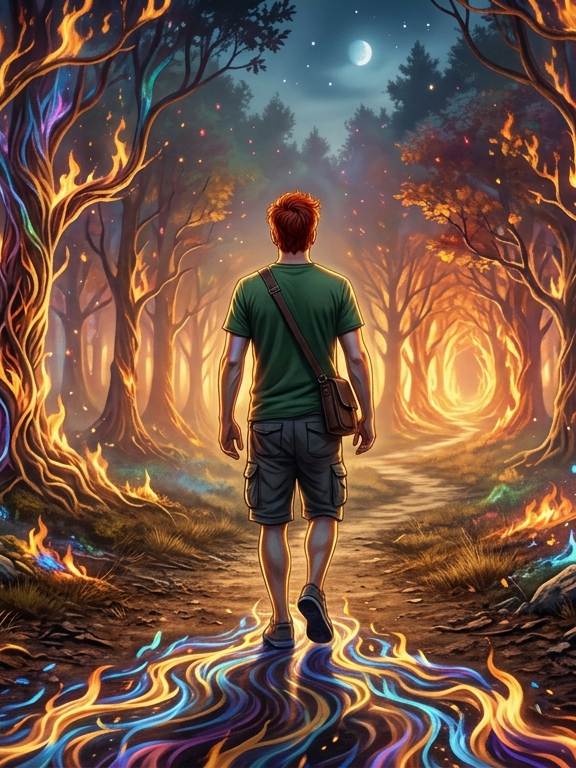
✦ ✦ ✦
Según las entidades, sus facultades más poderosas provenían de la energía, dones de energía, por lo que el elemento que mejor lo representaba era el fuego. Pero también era porque no querían admitir que los elementales de fuego eran quienes habían aceptado esta misión con más fuerza.
Por esa razón, las salamandras se sentían atraídas hacia él.
Por medio de este elemento debía sanar y ordenar su conexión.
Otros elementales habían intentado acercarse. Nou, un duende gigante de tierra, se había ofrecido como maestro, pero su personalidad difería demasiado de la naturaleza de Derek. Los sírfidos, aunque habían acudido, tampoco se sentían del todo cómodos, y las sirenas aparecían solo de forma ocasional.
En cambio, la única que permanecía firme era una salamandra de agua, profundamente agradecida y bendecida por tenerlo como amigo.
Su camino como druida ya había comenzado.
Sabía que el despertar definitivo sería implacable, porque cuando los dragones golpean, lo hacen con fuerza. Miden cada segundo, pero disfrutan mostrando la realidad con un solo impacto.
Debía recordar incluso cómo era ser un ser humano considerado normal y las diferencias con su actualidad como una entidad despertada por la luz de Él.
En sus retrocesos, SoloSoyJuan, como druida en proceso de despertar, debía regresar a aquellos recuerdos que se le habían borrado de niño e ir incluso un poco más allá: entrar al mar del silencio y reorganizar su mente para reencontrarse con la noche de las Epifanías Ilimitadas.
En una sola noche, después de cumplir su misión para la luz, fue atacado.
En esas epifanías no solo estuvo atrapado siglos dentro de una única noche.
También se le mostró su potencial.
Se le mostró quién había sido antes de nacer.
Se le mostraron todas las pruebas que los oscuros imaginaron para él.
Y se le mostró todo lo que iba a pasar y todo lo que ya estaba pasando.
Por ahora, casi todo se había cumplido.
Pero no podía recordarlo con claridad porque sus dones seguían estando mesurados.
Entonces habló el dios de los ángeles de Él:
—Inicien el retroceso de las Epifanías Ilimitadas de SoloSoyJuan.
Derek comprendió aquel pensamiento, así como los oscuros manejaban sus códigos esotéricos barbáricos, tal como les había dicho el peor.
Los demás ángeles simplemente se cubrieron el rostro.
San Miguel el Fiero.
San Rafael el Mensajero.
Gabriel el Sanador.
Solo faltaba que llegara Caos el Ejemplar.
El peor.
A la madrugada del 31 de octubre, Derek se despertó de un golpe fuerte, con una energía desbordante, una energía que hacía que la energía de posesión que el desdoblaba en su interior, hullera alterada, eran los elementales de fuego, enseñando una energía que no era mala ni buena solo limpia, Derek pensaba que no era una energía que se sintiera calidad, ni fría, no tenía malas intenciones, solo era energía, esto conectó sus canales a otros planos y despertando como un Druida.
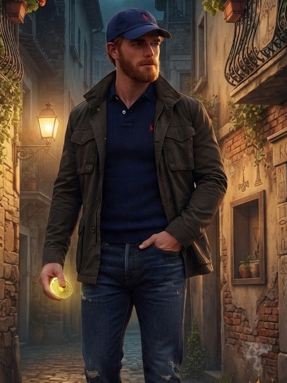
✦ ✦ ✦
Es tan Polo que terminó siendo ElChicoPolo. Se dice que solo usa ropa Polo; los rumores dicen que de vez en cuando usa Puma.
ElChicoPolo es el novato de esta temporada energética 2026. Es un vanidoso, colombo-alemán en energía, con sangre azul corriendo por sus venas. Vive en Antofagasta, Chile, en energía. De la misma forma aparece como un intocable del Valle.
Es descendiente de familias de antaño de Colombia, cuidadas por pactos familiares con diferentes entidades. Pero también es un heredero robado y, en energía, sobrino de la actual gobernadora de su departamento, con líneas políticas familiares ligadas a funcionarios de dicho departamento.
Esto era lo que las entidades decían de él por medio de pactos después de sus primeros enfrentamientos con él en agosto de 2026.
En su primer enfrentamiento en los juegos oscuros apareció como un novato. Todos los brujos y exorcistas caídos se fueron contra él, como ocurre con todo típico novato al que quieren robarle poder y energías.
Sin embargo, al ser atacado golpeó con runas hechas con su propia sangre. Las entidades, brujos, humanos, exorcistas caídos y gente poseída quisieron saber cuál era el exotismo que representaba ElChicoPolo.
Le dijeron que era nórdico-egipcio, lo cual los hizo reflexionar sobre el hecho de que ese año tenían otro novato prodigioso. El año anterior habían sufrido la mayor escasez energética y el mayor nivel de incumplimiento de las entidades, provocados por un Lucecita, como lo llamaban.
Ese Lucecita solo quería dormir y había sido poseído injustamente. Sin embargo, terminó jugando con ellos como si fueran juguetes. Tal como las entidades negligentes le dijeron al principio, sufriría; pero luego él decidió adaptarse a su nueva realidad y convertir todo aquello en un juego.
Jesús los dejaría a cargo de él porque ya estaba listo. Sin embargo, utilizó su propia oscuridad en su contra y sus propias reglas esotéricas y bárbaras para mostrarles que esta era una realidad dolorosa y que estaban condenados a sufrir castigos ejemplares en el infierno.
Nunca habían visto al bien utilizar las fuerzas de Él para desdoblar las energías oscuras y acabar con su fe en el mañana.
Al escuchar hablar de runas egipcias, comenzaron a crear hipótesis sobre lo avanzado que era este novato.
¿Qué cambió? ¿Karma?
Las oscuras comenzaron a hablar de ElChicoPolo en 2025 después de notar que la mayor parte de su ropa era de marca Polo y algunas otras prendas eran Puma y Levi's.
Entonces Jesús dijo:
"Necesito a mi pequeño vanidoso, que es perfecto. Y si para ustedes es poco serlo, entonces será perfecto de acuerdo con aquello que su exotismo, que va contra mí, indica."
Las entidades negligentes habían creado en su batalla contra él la figura de ElChicoPolo, un vanidoso.
Lo que les recordaba el espanto que los había desnucado en su propia psiquis el año anterior por irse contra él y no dejarlo dormir, terminando por ocasionar una escasez energética peor que la que dejó Jesús de Nazaret, decian que sus runas eran menos pesadas que las de solosoyjuan.
Al principio él decía que ya no era tan vanidoso, pero con el tiempo se dio cuenta de que necesitaba esa forma, porque ElChicoPolo era a quien no le tenían los oscuros, los brujos ni los exorcistas caídos.
Para entonces, SoloSoyJuan ya era famoso en los mundos energéticos y entre los poseídos. Le tenían pavor porque, como exorcista, había destruido sus energías y provocado una escasez energética que destruyó toda credibilidad.
Una Lucecita guiada por la luz había demostrado que podía utilizar la oscuridad en contra de ellos mismos.
Lucecita que jugaba con sus propias reglas, transmutándolas cuando ellos intentaban hacer lo mismo con lo de Él/Dios para oscurecerlo.
Así terminó destruyendo su fe en el mañana.
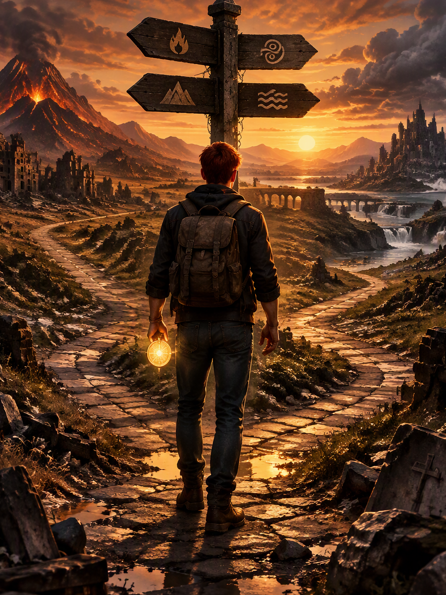
✦ ✦ ✦
El 2 de noviembre, Derek estaba cansado y se quedó dormido en la cama. Las entidades comenzaron a guiarlo por medio de visiones sobre el circulo de los elementos y sobre la necesidad de respetar ese ciclo, a pesar de que habían sido los elementales de fuego los que habían decidido despertarlo.
En su esoterismo, los elementales de los seres humanos se rigen por el signo del zodiaco. El humano en el que estaba Derek había nacido el 3 de junio de 1992. Eso quiere decir que su signo era Géminis y, por lo tanto, su elemento era el aire, el viento. El ciclo se mostraba iniciando con el viento, que estaba pasando a agua.
Derek retrocedió en los recuerdos del cuerpo que habitaba y comprendió que el humano había sido guiado sin saberlo por ese mismo esoterismo a través de la energía del mundo. Hacía no más de un año, su mente era silenciosa y no tenía miedo, ni tenía en cuenta todo lo que estaba sucediendo a su alrededor. Así como estaba, había pasado a agua. Eso quería decir que el humano ya tenía una fuerte conexión con el elemento viento, que representa el desapego a lo superficial, el desapego a las emociones que le impiden ver el mundo.
Los elementales le estaban mostrando qué ocurre cuando las energías de un elemento se combinan con las de otros: se vuelve muy difícil de obligar. A diferencia de la energía del elemento aire, que lo necesita todo y sencillamente exige que uno se acepte tal cual es, para comprenderla por completo debía aceptar esa pequeña parte que no era él. Y saber que, por eso, era importante consigo mismo.
Continuó con el proceso de retroceso y sencillamente dijo:
—Si él necesita eso, yo lo acepto.
Y entonces se pronunció:
—Recuerden: él soy yo, un poquito menos yo, pero todo yo.
Al aceptar eso, comenzó a ver todo lo que era y a aceptarlo. Aceptarme. Loco.
El humano había aceptado un pacto en el cual se comprometía a desdoblar toda la peor energía de posesión de todas las entidades de la creación en su cuerpo, solo si era verdad que él tenía un don de los ángeles más cercanos a Él desde que había nacido, que sería el mejor exorcista de su tiempo y que, cuando muriera, sería el mejor de todos.
Al aceptar esa parte, entendió que debía meterse en la mente del humano y en el cuerpo en el que estaba, para entender que esa parte ya había sido parte de él antes. Porque directamente intuía que esa parte menos que le faltaba para ser todo él era amor. Porque él sentía que no le gustaba a nadie. No sentía amor, solo compasión. Es un tipo de amor, pero no un apego ni nada parecido.
Y se acordaba de que el alma del ser humano en el que estaba lo había traicionado de una forma particular. Y el alma gemela de Derek tenía una hija. Era complicado ser una entidad creada en un cuerpo humano en base a las peores partes de todo y, al mismo tiempo, sentir que no eres tan malo.
Lo que las otras entidades decían como una profecía se había cumplido y, a la vez, no. Él la había cumplido para ellos, como castigo. Y le repetían:
—No sabemos qué es. Vemos algo más similar a nosotros que a un humano. Incluso en él veíamos un espejo de nuestros peores horrores.
Luzodiel era una de esas entidades. Cuando se enfrentó a él con toda su legión, al final lo vio todo y, a la vez, nada. Pero por último comentó:
—El peor fue SoloSoyJuan, el humano.
Y, por esa experiencia, dijo:
—Mi amigo se convirtió en el peor de todos.
Al ver eso, aceptó su castigo ejemplar: caminar gateando como un bebé con piedras en la espalda hasta cambiar.
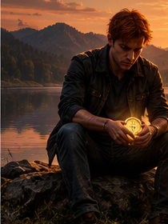
✦ ✦ ✦
Juan había pasado parte de su vida rechazando una parte de sí mismo.
No lo hacía por rebeldía ni por orgullo. Lo hacía por humildad. Había crecido creyendo que aceptar ciertas cosas de su interior era una forma de arrogancia, una manera de igualarse a Él. La humildad, pensaba, consistía en negarse a sí mismo, en apartar la mirada cuando algo lo hacía sentir más grande de lo que creía merecer.
Así que rechazó esa parte.
La escondió.
La enterró bajo capas de modestia y silencio.
Pero había un problema que no había previsto: cuanto más la negaba, más crecía. Cuanto más la rechazaba, más se le presentaba en sueños, en visiones, en esos momentos de lucidez repentina donde todo parecía encajar y luego se desmoronaba de nuevo.
La negación no la hacía desaparecer.
Solo la volvía más pesada.
La parte que faltaba
✦ ✦ ✦
Juan intuía que le faltaba algo. No sabía qué era, pero lo sentía. Era como mirarse en un espejo y notar que la imagen estaba incompleta. Como escuchar una canción y percibir que faltaba un instrumento.
Esa parte que le faltaba era amor.
No el amor que él conocía. No la pasión, que es un tipo de amor pero no el amor completo. No el apego, que es una forma de amor pero no la forma que llena. Era algo más profundo. Y, aun así, sentía que no le gustaba a nadie: había aprendido a esconderlo porque le habían hecho creer que no era digno de ser amado por lo que era.
Y sin embargo, esa parte era él.
Era la parte que lo hacía todo él. Pero un poquito menos.
Porque la humildad mal entendida le había enseñado a restarse. A ser menos. A no ocupar el lugar que le correspondía. A pensar que aceptar su plenitud era una forma de traicionar a Él.
La revelación
✦ ✦ ✦
Entonces llegó el momento en que comprendió la verdad.
No fue una voz ensordecedora ni un rayo que partió el cielo. Fue algo más silencioso. Una certeza que se abrió paso entre sus dudas como una grieta de luz en una pared vieja.
Comprendió que Él no quería que fuera menos.
Él lo estaba elevando.
Cada vez más.
Y cada vez que lo elevaba, Juan sentía esa parte que había rechazado volverse más grande, más clara, más suya. Ya no podía seguir negándola sin negar también lo que Él estaba haciendo en él.
Si Él lo elevaba, era porque quería que aceptara.
Si Él lo llamaba, era porque quería que respondiera.
Si Él lo hacía todo, era porque quería que él fuera todo también.
Un poquito menos. Pero todo.
La aceptación
✦ ✦ ✦
Juan aceptó.
Aceptó esa pequeña parte que le faltaba para ser él. Esa parte que había rechazado por humildad. Esa parte que había escondido porque creía que aceptarla era arrogancia.
Ya no.
Porque comprendió que la verdadera humildad no consiste en negarse a sí mismo, sino en aceptar lo que Él ha puesto en nosotros. No consiste en restarse, sino en reconocer que lo que somos no es nuestro: es de Él.
Al aceptar esa parte, comenzó a ver todo lo que era. Y a aceptarlo.
Aceptarme.
Loco.
Porque, ¿acaso no era eso lo que Él siempre había querido? ¿Que Juan dejara de esconderse? ¿Que dejara de restarse? ¿Que dejara de negar la parte de Él que había puesto en su alma?
Juan acepta esa pequeña parte que le falta para ser él. La acepta sin miedo, sin vergüenza, sin la falsa humildad que antes lo encadenaba.
Porque al ver que cada vez es más él y que Él lo eleva cada vez más, él debe aceptar ser todo Él.
Un poquito menos. Pero todo.
Y en ese acto de aceptación, Juan no se alejó de Él.
Se acercó más que nunca.
“Porque aceptar lo que Él ha puesto en nosotros no es igualarse a Él: es reconocerlo. Es decirle, con la vida entera: ‘Esto que soy, esto que me diste, esto que rechacé por miedo a ser demasiado, lo acepto. Porque Tú lo pusiste en mí. Y si Tú lo pusiste, es porque quieres que lo sea.’”
Y así, Juan dejó de negarse.
Y comenzó a ser.
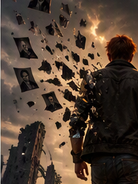
✦ ✦ ✦
El 19 de octubre de 2026, las entidades comenzaron a hablar sobre acontecimientos que parecían pertenecer a alguien más. Relataron visiones en las que aparecía un ser destinado a combatir la negligencia y restaurar el equilibrio donde otros habían fallado.
También afirmaban que podía comunicarse con entidades superiores y con Jesús de Nazaret. Según ellas, poseía una capacidad única para comprender aquello que permanecía oculto para la mayoría de los hombres.
Con el paso de los días, las revelaciones se volvieron más intensas.
El 26 de octubre, las entidades describieron castigos, juicios y acontecimientos futuros relacionados con quienes habían actuado con doble moral. Hablaban de un elegido al que llamaban el niño ángel, el consentido y el de la locura. Aseguraban que poseía un don luminoso capaz de abarcar múltiples aspectos de la creación.
Al día siguiente aparecieron relatos sobre dones de fuego, elementales y pactos espirituales. Recordaron las palabras del ingeniero agrónomo Jeison, a quien consideraban un brujo y exorcista, y afirmaron que ciertas manifestaciones sobrenaturales ocurrían únicamente en presencia de almas excepcionalmente puras.
También mencionaron a seres elementales que observaban a Derek con particular interés. Algunos lo consideraban ingenuo. Otros lo consideraban extraordinario. Incluso hablaban de mensajes transmitidos por santos y figuras celestiales que seguían atentamente su desarrollo.
La madrugada del 28 de octubre, las revelaciones alcanzaron un nuevo nivel.
Las entidades afirmaron que Derek había muerto tiempo atrás durante acontecimientos ocurridos en el aeropuerto de Pereira mientras se preparaba para enfrentar a un poderoso brujo.
Aseguraban que no había regresado como un hombre común.
Había vuelto como un reencarnado: un no muerto sometido a una profunda reorganización espiritual.
Según estas revelaciones, poseía una percepción extraordinaria que le permitía detectar intentos de manipulación espiritual y comprender aspectos de la realidad que permanecían ocultos para otros.
Ellos veían en él, más que un humano, uno de ellos.
Una entidad atrapada en un cuerpo carnal.
✦ ✦ ✦
Las entidades también insistían en otro nombre:
Derek Duque Aragón.
Decían que ese era el nombre que había recibido antes de nacer.
El nombre que le había sido dado desde el principio.
Y el nombre que algún día reclamará, porque se lo dio Él/Jesús.
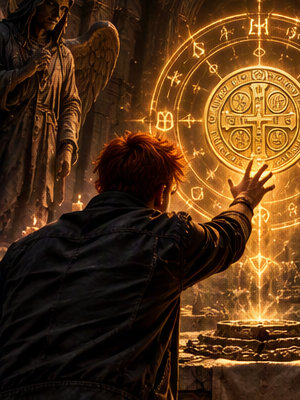
✦ ✦ ✦
Los ignorantes creían que un pacto era simplemente un intercambio: dar algo para recibir algo. Pero las entidades sabían que no era así. Un pacto era una unión entre voluntades, una deuda que permanecía viva hasta que ambas partes cumplieran aquello que habían prometido. Por eso los pactos no podían romperse con palabras vacías. Todo pacto debía cumplirse.
Los luminosos los cumplían por honor. Los oscuros, por necesidad. Y los humanos, porque tarde o temprano eran llevados a enfrentarse a las consecuencias de aquello que habían prometido.
Según el mejor exorcista de su tiempo, SoloSoyJuan, nuestras acciones nos atan. Todo lo que decimos debe cumplirse. Nos atamos tontamente al prometer cosas que no podemos cumplir. Las entidades, al poseerlo injustamente, le prometieron darle todo. Pero el único que le da todo y lo puede dar todo es Él. No medimos nuestras palabras ni sus alcances.
Los pactos oscuros, de igual forma, deben cumplirse. Postergarlos solo es aumentar el dolor, y más cuando son entidades, porque el oscuro más negligente muy probablemente fue en algún momento un ángel de Él. Para Él, ellos aún son sus ángeles, aunque sean o fueran caídos. Igual que nosotros.
Belcebú fue una de las primeras entidades en mostrarse tal como era ante Juan. También fue una de las pocas que no intentó desafiarlo constantemente. En lugar de ponerlo a prueba, se presentó como maestro. Afirmaba que Juan estaba fragmentado porque antiguos pactos, promesas y negligencias acumuladas durante mucho tiempo pesaban sobre él. No eran deudas suyas, sino deudas que los oscuros —e incluso San Miguel— tenían con él y que aún debían cumplirse.
Cuando los Cuatro Grandes lo desafiaron como exorcista, Belcebú fue el único que no buscó enfrentarlo. Le preguntó directamente:
Cuando los Cuatro Grandes lo desafiaron como exorcista, Belcebú fue el único que no buscó enfrentarlo. Le preguntó directamente:
—¿Quieres ser mi aprendiz?
Juan respondió:
—Por mí no hay problema. Pero sé que ustedes son engañosos. Si para Jesús, Dios o Él está bien, para mí también.
Con el tiempo realizaron un pacto. Belcebú afirmó que muchas entidades todavía necesitaban a Juan, aunque pocas estuvieran dispuestas a admitirlo, y que debían entregarse a Él si su tiempo entre los vivos ya había pasado. Juan respondió que aceptaría todo aquello si antes recibía una prueba de realidad. También añadió una condición: si Belcebú era realmente su maestro y lo ayudaba a cumplir su misión, cuando él muriera podría regresar a Él.
Los pactos quedaron sellados. Y como todos los pactos verdaderos, algún día tendrían que cumplirse.
✦ ✦ ✦
A SoloSoyJuan se le dijo que los que venden su alma, independientemente de la entidad, tienen un castigo mesuradísimo en el infierno que incluso resulta injusto y abusivo.
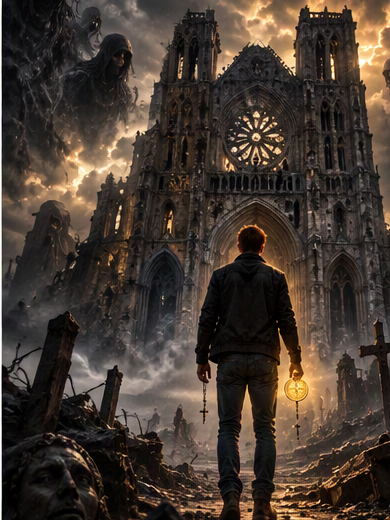
✦ ✦ ✦
Aquellas palabras y su ritmo alteraron mi corazón. Aunque el momento del día era de música, en la noche, en la letra transparente del mensaje y en lo que todavía tenía entre manos, supe que era la última carta. Aquello hacía parte de los escritos poéticos de la juventud de SoloSoyJuan.
Mucho antes de Derek Duque Aragón.
Mucho antes de los títulos, las profecías y las transformaciones.
Existó el Último Exorcista.
Su camino estuvo marcado por la búsqueda de respuestas donde otros solo encontraban preguntas. Durante años estudió, escribió, enseñó y exploró aquello que permanecía oculto para la mayoría de las personas.
Las entidades comenzaron a observar. Algunas lo pusieron a prueba; otras intentaron desviarlo; y otras simplemente aguardaban para descubrir qué llegaría a convertirse.
Con el paso de los años enfrentó desafíos espirituales, conflictos internos y pruebas impuestas por fuerzas que la mayoría de los seres humanos jamás llegaría a percibir. Los Cuatro Grandes también pusieron su atención sobre él.
Cada derrota le enseñó algo. Cada victoria le exigió un precio.
Fue así como adquirió fama entre luminosos y oscuros. No porque expulsara entidades únicamente de otros, sino porque aprendió primero a enfrentarlas dentro de sí mismo.
Por esa razón terminaron llamándolo exorcista. Y con el tiempo, el mejor de su era.
Las entidades afirmaban que era el mejor exorcista de su tiempo y el tercer alto mago de la creación. Solo dos nombres eran colocados por encima del suyo: Salomón y Jesús de Nazaret.
✦ ✦ ✦
Sin embargo, había algo que pocos comprenden. En su único don de los ángeles más cercanos a Él, Jesús había contenido todos los castigos ejemplares: los peores de la creación.
Jesús llevaba años sacando a las entidades que buscaban poseer a SoloSoyJuan, porque aquellos castigos estaban en él y eso lo convertía en un lugar peor del que había sido cuando intentaban poseerlo.
✦ ✦ ✦
Era capaz de usar el exorcismo personal de Él, el de las verdades, que hacía que incluso un hechicero negligente cayera en la maldición de los brujos caídos: limbos de mentiras y engaños de ellos mismos, quedando poseído por su propia energía.
Pero incluso las mayores leyendas llegan a su final.
Y la del Último Exorcista estaba acercándose, en una época en que los exorcistas ya no seguían los principios de Él. Los exorcismos eran débiles por la cantidad de mentiras y engaños de los mismos, incluso exorcistas que esclavizaban entidades con pactos con ellos para mantener el control de las personas.
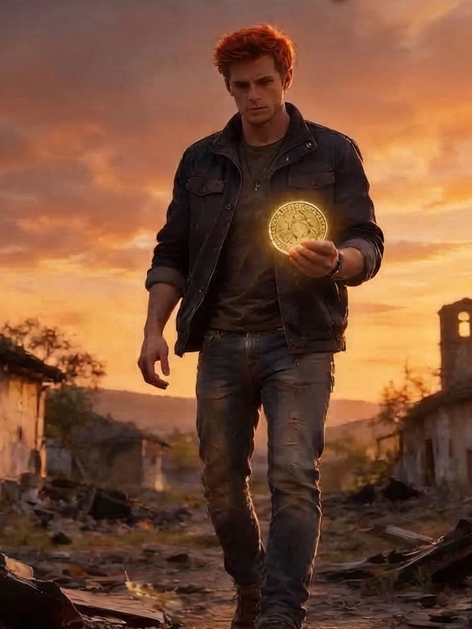
✦ ✦ ✦
Recuerdos que obstaculizan mi corazón, tapando las arterias sin olvidarla. Poca sangre que me llega, falta de ti. Fulminante infarto que pronto llega sin decir adiós.
Del 3 de junio de 1992 al 3 de noviembre de 2026.
Esas fueron las fechas de existencia de SoloSoyJuan, el nombre de su profecía.
Semanas después del terremoto histórico que sacudió Colombia el 10 de agosto, transcurrieron entre reflexiones, cambios y extraños acontecimientos que Juan intentaba comprender desde su condición de simple mortal.
El 18 de octubre experimentó un profundo mareo. Sintió desfallecimiento, sudores profusos y un intenso dolor en el pecho. Aquello le permitió comprender el sufrimiento que soportan los animales considerados plagas y las personas a quienes se les administra veneno para asesinarlas. La experiencia fue tan intensa que prometió que, si lograba superarla, dedicaría parte de su vida a concientizar sobre el daño que dichas sustancias producen.
Durante el día siguiente continuó sintiéndose débil. Mientras atravesaba aquella agonía, reflexionó sobre la muerte, la compasión y el sufrimiento silencioso de los seres vivos.
El 26 de octubre se dispuso a organizar sus escritos en Google Docs. Quería transformar años de notas dispersas en algo coherente. Un legado. Aquella noche pensó en su familia, en las diferencias que habían marcado su convivencia y en la dificultad de ser comprendido por quienes tenía más cerca.
El 27 de octubre reorganizó su habitación. Preparó un espacio cómodo para el viejo perro de su madre y construyó un pequeño altar utilizando tierra, agua, fragmentos de tejas, restos de velas y papeles donde escribía pensamientos y peticiones.
La madrugada del 28 de octubre revisó recuerdos de su pasado. Se preguntó hasta qué punto una persona seguía siendo la misma después de atravesar ciertos acontecimientos. Aquellas preguntas terminarían cambiando para siempre su visión del mundo.
Al iniciar el 31 de octubre buscó su celular. Creía haberlo perdido. Las voces y presencias que percibía insistían en que seguía dentro de la casa. La respuesta era siempre la misma:
—Hay que seguir buscando.
A las 9:29 de la mañana finalmente lo encontró sobre su estante, junto al computador donde trabajaba cada día. No había desaparecido. Simplemente no había buscado allí.
Aquello le recordó una enseñanza que había desarrollado con el tiempo. Cuando perdía algo, intentaba aceptarlo como parte del proceso. Pensaba que las personas se aferraban demasiado a cosas, ideas y preocupaciones pasajeras. También observaba cómo muchos terminaban atrapados entre dos extremos: vivir únicamente para sí mismos, o sacrificarlo todo por los demás. Juan sospechaba que la respuesta se encontraba en algún punto intermedio. O quizá en dejar de pensar la vida en términos absolutos.
Juan poseía un fuerte don de palabra. Llevaba dentro una pequeña luz que consideraba parte de su esencia. Y aunque las personas rara vez comprendieran su manera de pensar, siempre respondía lo mismo:
—Actúo cuando me nace actuar, indiferente de lo que pase.
Juan pensaba en el apego, en las ataduras, y llegó a la conclusión de que la vida misma es una de ellas. Solo que no tenemos la comprensión para entenderlo, porque preferimos vivir una vida mala pero buena. Tenemos una vida mala, pero ya solo con vivir una vida conforme a eso, es mala. Estar dispuesto a desapegarse de la vida e incluso de la existencia misma por algo mayor es un acto que dignifica la vida.
✦ ✦ ✦
Y así terminó la historia de SoloSoyJuan: en un pacto. Pidió permiso a Él para crear la entidad que los oscuros necesitaban para volver a Él con fuerza, liberarlos de sus pactos que las esclavizaban incluso con sacerdotes negligentes y quitarles las excusas. Una persona que en el más allá ya tenía todo y a quien se le había mostrado lo que le esperaba.
Terminó su existencia misma, incluso su alma —o el temido consumo de almas— para cumplir el capricho de los oscuros, incluso los humanos.
Había caído el último ángel de Él: el arcángel del caos, el dios de los ángeles de Él, el tercer mejor alto mago de todos los tiempos y el mejor exorcista de todos los tiempos, solo igualado por Jesús de Nazaret. Y lo más doloroso: el niño ángel de Él.
Él era un poquito menos Él, pero todo Él. Y el poquito menos Él era el humano. Y ahora que había ido, solo quedaba todo Él: la forma del tercer Él.
Y así se cerró el círculo de Él: el pacto de Dios, los ángeles de Él y la casa de David. SoloSoyJuan no sabía, pero él era el último descendiente legítimo de Salomón. Por sus venas corría la sangre de aquel que murió en la cruz. Las promesas de Él a la casa de David:
“Les di mis herramientas, a mi hijo y a mi último ángel, que era el primer y único bebé ángel entregado para que mi hijo no volviera a sacrificarse. Pero si él se va, todo acaba y los peores castigos se liberarán.”
Las entidades, incluso las más negligentes, desataron su ira sobre la cosa Villalobo y Cortez.
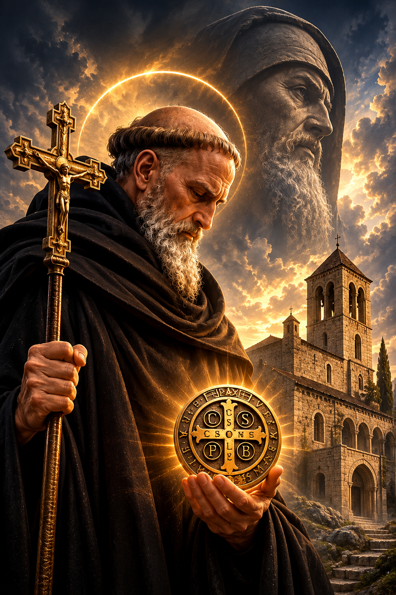
✦ ✦ ✦
San Benito de Nursia fue un monje que dejó su vida para enfrentarse al mal. Es uno de los exorcistas más reconocidos de la historia. Por eso, gran parte de su legado está relacionado con experiencias paranormales y con la lucha contra las influencias negativas. Es famoso por el exorcismo asociado a la Medalla de San Benito, que encontramos incluso en rosarios, cruces y otros símbolos de protección. El exorcismo de San Benito buscaba la forma de rechazar toda influencia negativa.
SoloSoyJuan, cuando era niño, veía anime y comenzó a desarrollar una mente enfocada en el proceso de ensayo y error, aprendiendo de los errores y cuestionando el principio de empezar desde cero, ya que, según él, eso era imposible o prácticamente imposible.
Perdonar es de sabios, pero olvidar es permitir que las atrocidades del pasado regresen al presente. Tenemos que ser coherentes con las consecuencias de nuestras acciones y confrontarlas. Huir de ellas solo las vuelve más complicadas de afrontar después. Al final, todo se cobra, incluso a veces de una forma injusta.
Uno de los errores que los oscuros veían en Juan era esa forma de pensar. Uno de los santos que fue a visitar a Juan en octubre de 2025 fue San Benito. Fue a cumplirle en nombre de los muertos, y ahí continuó su camino como exorcista.
El mejor exorcista de sus tiempos debía ser mentoreado por lo menos por una entidad de cada tipo diferente, para cumplirle las promesas que se le habían hecho y reparar parte del daño en el que se habían involucrado al influenciar a muchos otros para cumplir pactos que terminaron volviéndose contra él y contra su mejor guerrero, su mayor representante en este tiempo.
Con cada una de esas enseñanzas, Juan fue fortaleciendo su personalidad. Poco a poco se hizo mejor, más fuerte y más consciente de las responsabilidades que acompañaban el camino que había decidido recorrer.
Para comprender la importancia de aquella visita, también era necesario entender quién había sido San Benito de Nursia.
✦ ✦ ✦
San Benito de Nursia
San Benito de Nursia (nacido en Italia alrededor del año 480 y fallecido en 547) es considerado el patrono de Europa y el padre del monaquismo occidental.
Perteneciente a una familia noble, fue enviado a Roma a estudiar, pero al ver la vida mundana de la ciudad decidió abandonarlo todo para buscar a Dios. Vivió un tiempo como ermitaño en una cueva en Subiaco, donde su fama de santidad comenzó a atraer a otros discípulos. Posteriormente fundó varios monasterios, destacándose la célebre Abadía de Montecasino.
San Benito estableció una regla de vida monástica conocida como la "Santa Regla", basada en el lema «Ora et labora» (Reza y trabaja), la cual equilibraba la oración litúrgica, el trabajo manual y el estudio intelectual.
Se le atribuyen numerosos milagros y es muy recordado por su profunda devoción a la Cruz y su lucha contra las tentaciones. También es considerado el santo de la buena muerte, ya que falleció de pie, rezando con los brazos en alto, poco después de recibir la Eucaristía en el altar de Montecasino.
La Medalla de San Benito es uno de los sacramentales más antiguos y conocidos de la Iglesia católica, utilizada tradicionalmente como un escudo de protección espiritual.
En su reverso, la medalla presenta una gran cruz grabada con una serie de letras que corresponden a las iniciales de una poderosa oración de exorcismo y confianza en Dios.
En la barra vertical de la cruz se encuentran las letras C.S.S.M.L., que provienen del latín Crux Sacra Sit Mihi Lux y se traducen como «La Santa Cruz sea mi luz».
En la barra horizontal están las letras N.D.S.M.D., de Non Draco Sit Mihi Dux, que significan «Que el dragón, el demonio, no sea mi guía».
Alrededor del borde exterior de la medalla se forma un círculo de rechazo al mal mediante dos frases clave:
V.R.S.N.S.M.V. (Vade Retro, Satana! Numquam Suade Mihi Vana), que se traduce como:
«¡Apártate, Satanás! No me sugieras vanidades».
Y S.M.Q.L.I.V.B. (Sunt Mala Quae Libas; Ipse Venena Bibas), que significa:
«Malo es lo que me ofreces; bebe tú mismo tu veneno».
Finalmente, en la parte superior suele encontrarse la palabra PAX, que significa «Paz» y representa el lema principal de la orden benedictina.
✦ ✦ ✦
El significado de aquella medalla llamó especialmente la atención de SoloSoyJuan.
Para los oscuros, la Medalla de San Benito simbolizaba exorcismo, liberación y sanación, pero principalmente un exorcismo fuerte y constante.
Según ellos, incluso cuando una persona iba a ser poseída con fuerza, no solo llevar una Medalla de San Benito en el cuello podía anular esa influencia, sino que la misma medalla anulaba maleficios, hechicería y distintas formas de control sobre la persona.
Además, algunos sostenían que la Medalla de San Benito tenía la capacidad de desdoblar la posesión interna del ser humano. De allí surgía la práctica conocida como arrojar monedas o medallas de San Benito a los vecinos para sacarlos de ciertas influencias.
La pregunta era si aquello realmente era una liberación o un desdoblamiento de la posesión interna del ser humano.
A SoloSoyJuan se le enseñó a utilizar esta medalla de diferentes maneras. Con el conocimiento que adquirió con el tiempo, logró utilizar incluso la misma medalla para ocasionar desastres naturales.
Algo que se decía desde la antigüedad, pero que realmente era un conocimiento perdido en el mundo actual.
SoloSoyJuan abrió su corazón y su entendimiento sobre esta medalla, ya que descubrió que los oscuros tenían una fascinación por ella, pero también buscaban oscurecerla.
Sin embargo, él veía esa percepción de la oscuridad con otros ojos y quizás por eso entendía mucho mejor cómo jugar con las reglas de esas entidades.
Él veía que esas entidades querían hacer pasar esta medalla por una comprensión oscura, cuando en realidad era más parte de su guerra interna por cumplir pactos ancestrales que llevaban milenios desdoblando su personalidad real.
Hacían que las personas buscaran esta medalla para limpiarse y, de una forma vergonzosa, ellos también buscaban limpiarse por medio de humanos que consideraban más caídos que ellos mismos.
Los oscuros, al final, siempre guiaban hacia la Medalla de San Benito a las personas que no sabían qué hacer cuando estaban poseídas.
El dolor de Juan podía ocasionar un sinfín de terremotos e inundaciones en el mundo por medio de las energías de la posesión del mundo.
Las personas no querían cambiar ni querían conocer realmente con profundidad. El mayor dolor era tener que utilizar ese conocimiento esotérico para desdoblar las energías de las entidades en este tiempo, entidades que se encontraban esclavizadas por sus propios pactos.
Muchos de esos pactos llevaban tanto tiempo existiendo que terminaban gobernando a quienes los habían aceptado. Aquello que alguna vez consideraron poder terminó convirtiéndose en una prisión.
Por eso, para Juan, comprender las entidades no consistía únicamente en enfrentarlas, sino también en comprender las cadenas que ellas mismas habían construido y que ya no podían romper.
Según San Benito, su nombre entre las entidades, incluso entre las más negligentes, es:
El Exorcista.
Continuará…
La historia no termina aquí.
Los registros que SoloSoyJuan dejó atrás apenas comienzan a revelarse.
✦ ✦ ✦
Continuaremos la próxima semana con la otra parte.
“Tarde o temprano comprenderán que todo esto era real.”
El pacto te espera.